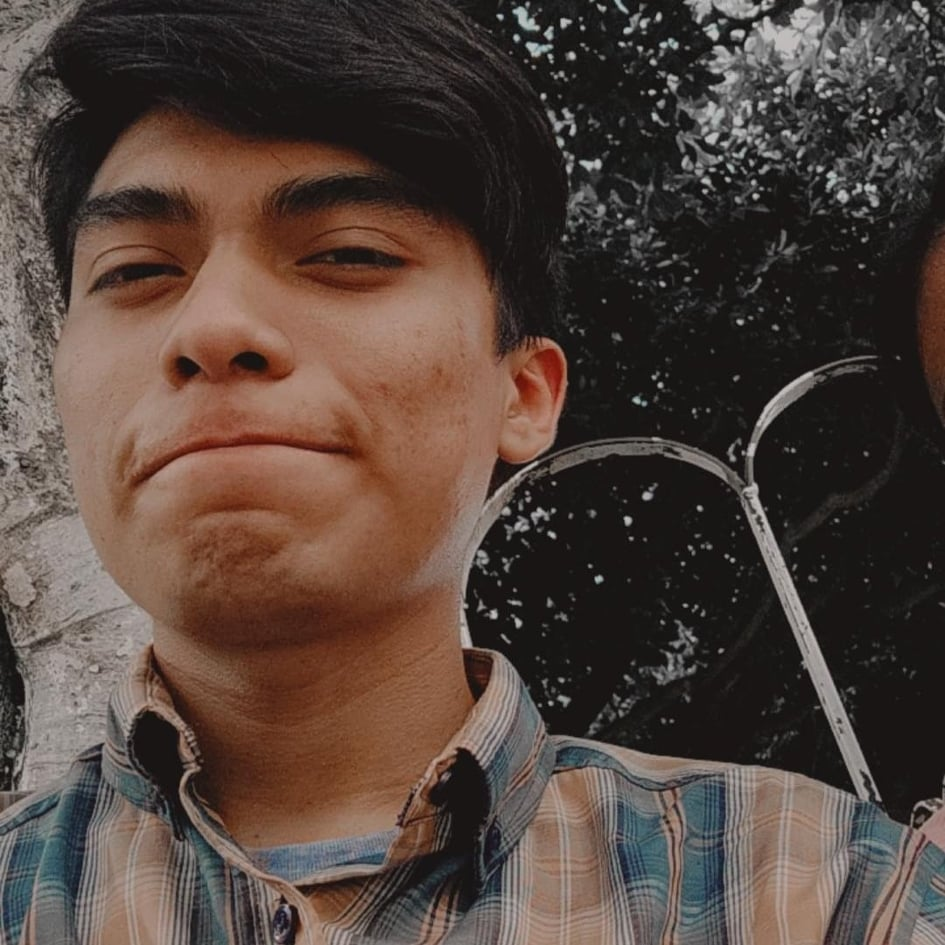

¿Que es esto?
¡Hola!
Mi nombre es Alex Lozano García soy un joven de 19 años, casi 20, y esta es mi página personal donde presento cosas acerca de mí, mi vida y lo que me gusta, soy un estudiante de sistemas computacionales, con mente de programador, visión de diseñador y alma de música, espero que te guste mi página.
